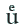

Level 3
Umlaute werden entsprechend der Vorlage transkribiert, d. h. die Umlaute in den heute gebräuchlichen Formen Ä, Ö, Ü, ä, ö, ü werden von solchen, die durch ein hochgestelltes e über Vokal gekennzeichnet sind, unterschieden. Beim hochgestellten e über dem Vokal wird dieses Zeichen durch einen Codepoint transkribiert. Für die Kodierung ist zu verwenden, sofern in der jeweiligen Kodetabelle ein spezifischer Codepoint vorhanden ist die standardisierte Kodierung (Unicode) oder die Community normierte Kodierung wie MUFI oder die in Abstimmung mit dem OCR-D-Koordinierungsgremium genutzte OCR-D-Code-Definition in Nachnutzung gemeinsam getroffener Vereinbarungen internationaler Großprojekte wie IMPACT, EEBO, ECCO. Die Unicode-Kodierung ist den anderen Kodierungen vorzuziehen.
| Beispiel | Kodierung |
|---|---|
hex:  |
|
hex:  |
|
|  | hex:  |